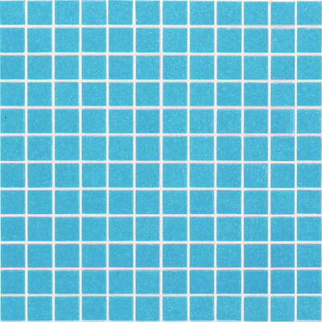

Pastilhas de vidro pigmentado azul bebê

Descrição
As pastilhas de vidro pigmentado azul bebê podem ser aplicadas como revestimento em áreas externas (como piscinas e fachadas) ou internas (como banheiros e cozinhas). Esse modelo de pastilhas possui um único tom de azul claro, com brilho intermediário, conforme apresentado na..
R$ 17,25/cada
Vendido e entregue por Itacerâmica
Descrição detalhada
| Tipo de pastilha | Vidro |
|---|---|
| Tipo de material | Vidro comum |
| Ambiente indicado | Áreas internas e externas |
| Cor | Azul |
| Intensidade do brilho | Semi-brilho |
| Local indicado para colocação | Parede |
| Uso recomendado | Cozinhas, lavabos, banheiros, lavanderia, piscinas, saunas |
| Antiderrapante | Não |
| Altura | 32,40 cm |
| Largura | 32,40 cm |
| Espessura | 4,00 mm |
| Altura da pastilha | 2,50 cm |
| Largura da pastilha | 2,50 cm |
| Peso | 0,65 kg |
| Quantidade de pastilhas por m² | 10 peças |
| Espaçamento entre as peças | 2 mm |